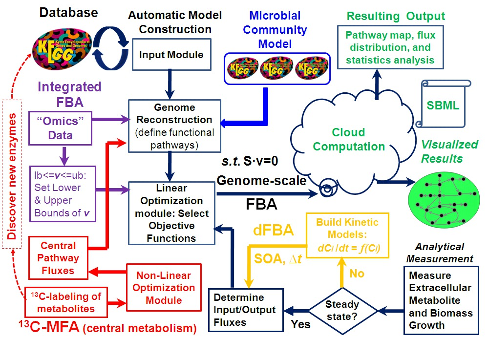

Future Work: MicrobesFlux 2.0
State-of-art flux analyses will be incorporated in MicrobesFlux 2.0:
- using the 13C-isotopomer labeling of metabolites (13C-MFA) to assist the genome-scale flux analysis;
- integrating FBA with transcription analysis to improve model accuracy and reveal cell-wide metabolic regulations;
- linking kinetic bioprocess models to flux analysis to understand dynamic metabolisms in response to process variables (such as nutrient concentrations and product inhibitions);
- characterizing metabolisms in syntrophic microbial communities to capture metabolic interactions between different species.
